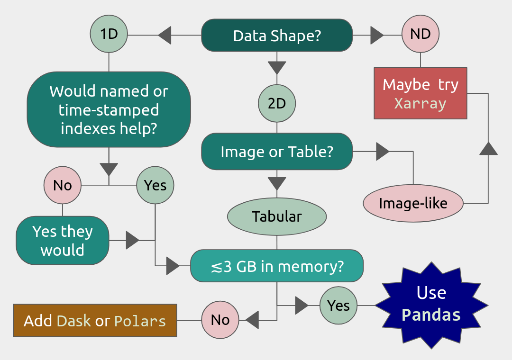
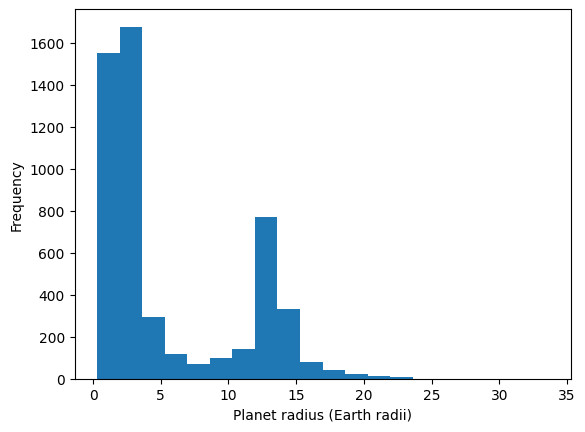
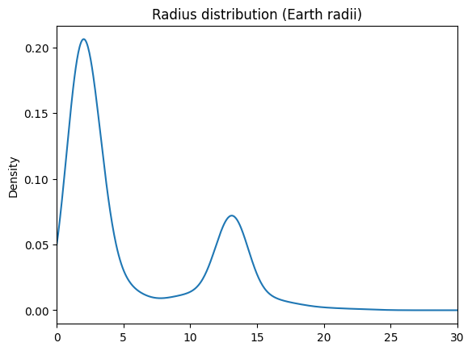
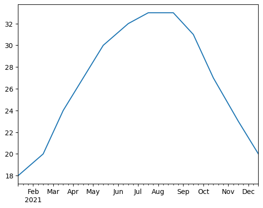

Intro to Pandas
Pandas, short for PANel Data AnalysiS, is a Python data library for cleaning, organizing, and statistically analyzing moderately large (\(\lesssim3\) GiB) data sets. It was originally developed for analyzing and modelling financial records (panel data) over time, and has since expanded into a package rivaling SciPy in the number and complexity of available functions. Pandas offers:
Explicit, automatic data alignment: all entries have corresponding row and column labels/indexes.
Easy methods to add, remove, transform, compare, broadcast, and aggregate data within and across data structures.
Data structures that support any mix of numerical, string, list, Boolean, and datetime datatypes.
I/O interfaces that support a wide variety of text, binary, and database formats, including Excel, JSON, HDF5, NetCDF, and SQLite.
Hundreds of built-in functions for cleaning, organizing, and statistical analysis, plus support for user-defined functions.
A simple interface with the Seaborn plotting library, and increasingly also Matplotlib.
Easy multi-threading with Numba.
Limitations. Pandas alone has somewhat limited support for parallelization, N-dimensional data structures, and datasets much larger than 3 GiB. Fortunately, there are packages like dask and polars that can help. In partcular, dask will be covered in a later lecture in this workshop. There is also the xarray package that provides many similar functions to Pandas for higher-dimensional data structures, but that is outside the scope of this workshop.
Get today’s tarball!
Load and Run
Important
For this session, you should load
ml GCC/12.3.0 Python/3.11.3 SciPy-bundle/2023.07 matplotlib/3.7.2 Tkinter/3.11.3
Pandas, like NumPy, has been part of the SciPy-bundle module since 2020. Use ml spider SciPy-bundle to see which versions are available and how to load them.
Important
Pandas requires Python 3.8.x and newer. Do not use SciPy-bundles for Python 2.7.x!
As of 27-11-2024, the output of ml spider SciPy-bundle on Kebnekaise is:
----------------------------------------------------------------------------
SciPy-bundle:
----------------------------------------------------------------------------
Description:
Bundle of Python packages for scientific software
Versions:
SciPy-bundle/2019.03
SciPy-bundle/2019.10-Python-2.7.16
SciPy-bundle/2019.10-Python-3.7.4
SciPy-bundle/2020.03-Python-2.7.18
SciPy-bundle/2020.03-Python-3.8.2
SciPy-bundle/2020.11-Python-2.7.18
SciPy-bundle/2020.11
SciPy-bundle/2021.05
SciPy-bundle/2021.10-Python-2.7.18
SciPy-bundle/2021.10
SciPy-bundle/2022.05
SciPy-bundle/2023.02
SciPy-bundle/2023.07-Python-3.8.6
SciPy-bundle/2023.07
SciPy-bundle/2023.11
----------------------------------------------------------------------------
For detailed information about a specific "SciPy-bundle" package (including how to load the modules) use the module's full name.
Note that names that have a trailing (E) are extensions provided by other modules.
For example:
$ module spider SciPy-bundle/2023.11
----------------------------------------------------------------------------
Important
For this session, you should load
ml GCC/13.2.0 Python/3.11.5 SciPy-bundle/2023.11 matplotlib/3.8.2
On the LUNARC HPC Desktop, all versions of Jupyter and Spyder load Pandas, NumPy, SciPy, Matplotlib, Seaborn, and many other Python packages automatically, so you don’t need to load any modules.
If you work at the command line and choose not to use Anaconda3, you will need to load a SciPy-bundle to access Pandas. Use ml spider SciPy-bundle to see which versions are available, which Python versions they depend on, and how to load them.
Important
Pandas requires Python 3.8.x and newer. Do not use SciPy-bundles for Python 2.7.x!
As of 27-11-2024, the output of ml spider SciPy-bundle on Cosmos is:
----------------------------------------------------------------------------
SciPy-bundle:
----------------------------------------------------------------------------
Description:
Bundle of Python packages for scientific software
Versions:
SciPy-bundle/2020.11-Python-2.7.18
SciPy-bundle/2020.11
SciPy-bundle/2021.05
SciPy-bundle/2021.10-Python-2.7.18
SciPy-bundle/2021.10
SciPy-bundle/2022.05
SciPy-bundle/2023.02
SciPy-bundle/2023.07
SciPy-bundle/2023.11
SciPy-bundle/2024.05
----------------------------------------------------------------------------
For detailed information about a specific "SciPy-bundle" package (including ho
w to load the modules) use the module's full name.
Note that names that have a trailing (E) are extensions provided by other modu
les.
For example:
$ module spider SciPy-bundle/2024.05
----------------------------------------------------------------------------
Important
For this session, you should load
module load python/3.11.8
On Rackham, Python versions 3.8 and newer include NumPy, Pandas, and Matplotlib. There is no need to load additional modules after loading your preferred Python version.
Important
For this session, you should load
module load buildtool-easybuild/4.8.0-hpce082752a2 GCC/13.2.0 Python/3.11.5 SciPy-bundle/2023.11 JupyterLab/4.2.0
Pandas, like NumPy, has typically been part of the SciPy-bundle module since 2020. Use ml spider SciPy-bundle to see which versions are available and how to load them.
Jupyter Lab is only available on Dardel via ThinLinc.
As there are only 30 ThinLinc licenses available at this time, we recommend that you work on the exercises with a local installation on a personal computer.
Do not trust that a ThinLinc session will be available or that On-Demand applications run therein will start in time for you to keep up (it is not unusual for wait times to be longer than the requested walltime).
The exercises were written to work on a regular laptop. If you must work on Dardel, follow the steps below, and view the exercises and solutions in the GitHub repository (they should render correctly).
Important
For this session, you could load
ml cray-python/3.11.7On Dardel, all cray-python versions include NumPy, SciPy, and Pandas, and do not require any prerequisites. Matplotlib is separate and will have to be loaded using
ml PDC/23.12 matplotlib/3.8.2-cpeGNU-23.12, where PDC/23.12 is a prerequisite. The versions available for for both cray-python and matplotlib are limited because it is generally assumed that most users will build their own environments, but the installed versions are fine for this course.
ALTERNATIVE IF THINLINC IS AVAILABLE
Start Jupyter from the Menu and it will work!
Default Anaconda 3 has all packages needed for this lesson
- OR USE SPYDER:
start interactive session
salloc --ntasks=4 -t 0:30:00 -p shared --qos=normal -A naiss2025-22-403 salloc: Pending job allocation 9102757 salloc: job 9102757 queued and waiting for resources salloc: job 9102757 has been allocated resources salloc: Granted job allocation 9102757 salloc: Waiting for resource configuration salloc: Nodes nid001057 are ready for job
We need to ssh to the specific node, like
ssh nid001057Use the conda env you created in Exercise 2 in Use isolated environemnts
ml PDC/23.12 ml miniconda3/24.7.1-0-cpeGNU-23.12 export CONDA_ENVS_PATH="/cfs/klemming/projects/supr/hpc-python-spring-naiss/$USER/" export CONDA_PKG_DIRS="/cfs/klemming/projects/supr/hpc-python-spring-naiss/$USER/" source activate spyder-env conda install matplotlib pandas seaborn spyder %
To know if Pandas is the right tool for your job, you can consult the flowchart below.
{kind=link}

You will learn…
What are the basic object classes, data types, and their most important attributes and methods
How to input/output Pandas data
How to inspect, clean, and sort data for later operations
How to perform basic operations - statistics, binary operators, vectorized math and string methods
What are GroupBy objects and their uses
How to compare data, implement complex and/or user-defined functions, and perform windowed operations
Advanced topics (if time allows) - time series, memory-saving data types, how to prep for ML/AI
We will also have a short session after this on plotting with Seaborn, a package for easily making publication-ready statistical plots with Pandas data structures.
Basic Data Types and Object Classes
The main object classes of Pandas are Series and DataFrame. There is also a separate object class called Index for the row indexes/labels and column labels, if applicable. Data that you load from file will mainly be loaded into either Series or DataFrames. Indexes are typically extracted later.
pandas.Series(data, index=None, name=None, ...)instantiates a 1D array with customizable indexes (labels) attached to every entry for easy access, and optionally a name for later addition to a DataFrame as a column.Indexes can be numbers (integer or float), strings, datetime objects, or even tuples. The default is 0-based integer indexing. Indexes are also themselves a Pandas data type.
pandas.DataFrame(data, columns=None, index=None, ...)instantiates a 2D array where every column is a Series. All entries are accessible by column and row labels/indexes.Any function that works with a DataFrame will work with a Series unless the function specifically requires column arguments.
Column labels and row indexes/labels can be safely (re)assigned as needed.
For the rest of this lesson, example DataFrames will be abbreviated as df in code snippets (and example Series, if they appear, will be abbreviated as ser).
Important Attributes
The API reference in the official Pandas documentation shows hundreds of methods and attributes for Series and DataFrames. The following is a very brief list of the most important attributes and what they output.
df.indexreturns a list of row labels as an array of Pandas datatypeIndexdf.columnsreturns a list of column labels as an array of Pandas datatypeIndexdf.dtypeslists datatypes by columndf.shapegives a tuple of the number of rows and columns indfdf.valuesreturnsdfconverted to a NumPy array (also applicable todf.columnsanddf.index)
Pandas assigns the data in a Series and each column of a DataFrame a datatype based on built-in or NumPy datatypes or other formatting cues. Important Pandas datatypes include the following.
Numerical data are stored as
float64orint64. You can convert to 32-, 16-, and even 8-bit versions of either to save memory.The
objectdatatype stores any of the built-in typesstr,Bool,list,tuple, and mixed data types. Malformed data are also often designated asobjecttype.A common indication that you need to clean your data is finding a column that you expected to be numeric assigned a datatype of
object.
Pandas has many functions devoted to time series, so there are several datatypes—
datetime,timedelta, andperiod. The first two are based on NumPy data types of the same name , andperiodis a time-interval type specified by a starting datetime and a recurrence rate. Unfortunately, we won’t have time to cover these at depth.
There are also specialized datatypes for, e.g. saving on memory or performing windowed operations, including
Categoricalis a set-like datatype for non-numeric data with few unique values. The unique values are stored in the attribute.categories, that are mapped to a number of low-bit-size integers, and those integers replace the actual values in the DataFrame as it is stored in memory, which can save a lot on memory usage.Intervalis a datatype for tuples of bin edges, all of which must be open or closed on the same sides, usually output by Pandas discretizing functions.Sparse[float64, <omitted>]is a datatype based on the SciPy sparse matrices, where<omitted>can be NaN, 0, or any other missing value placeholder. This placeholder value is stored in the datatype, and the DataFrame itself is compressed in memory by not storing anything at the coordinates of the missing values.
This is far from an exhaustive list.
Note
Index-Class Objects
Index-class objects, like those returned by df.columns and df.index, are immutable, hashable sequences used to align data for easy access. All of the previously mentioned categorical, interval, and time series data types have a corresponding Index subclass. Indexes have many Series-like attributes and set-operation methods, but Index methods only return copies, whereas the same methods for DataFrames and Series might return either copies or views into the original depending on the method.
Warning
Pandas documentation has uses different naming conventions for row and column labels/indexes depending on context.
“Indexes” usually refer to just the row labels, but may sometimes refer to both row and column labels if those labels are numeric.
“Columns” may refer to the labels and contents of columns collectively, or only the labels.
Column labels, and rarely also row indexes, are sometimes called “Keys” when discussing commands designed to mimic SQL functions.
A column label may be called a “name”, after the optional Series label.
Input/Output and Making DataFrames from Scratch
Most of the time, Series and DataFrames will be loaded from files, not made from scratch. The following table lists I/O functions for the most common data formats. Input and output functions are sometimes called readers and writers, respectively. The read_csv() is by far the most commonly used since it can read any text file with a specified delimiter (comma, tab, or otherwise).
Typ1e |
Data Description |
Reader |
Writer |
|---|---|---|---|
text |
CSV / ASCII text with standard delimiter |
|
|
text |
Fixed-Width Text File |
|
N/A |
text |
JSON |
|
|
text |
HTML |
|
|
text |
LaTeX |
N/A |
|
text |
XML |
|
|
text |
Local clipboard |
|
|
SQL |
SQLite table or query |
|
|
SQL |
Google BigQuery |
|
|
binary |
Python Pickle Format |
|
|
binary |
MS Excel |
|
|
binary |
OpenDocument |
|
|
binary |
HDF5 Format |
|
|
binary |
Apache Parquet |
|
|
This is not a complete list, and most of these functions have several dozen possible kwargs. It is left to the reader to determine what kwargs are needed. As with NumPy’s genfromtxt() function, most of the text readers above, and the excel reader, have kwargs that let you choose to load only some of the data.
In the example below, a CSV file called “exoplanets_5250_EarthUnits.csv” in the current working directory is read into the DataFrame df and then written out to a plain text file where decimals are rendered with commas, the delimiter is the pipe character, and the indexes are preserved as the first column.
Hint
Try it yourself!
import pandas as pd
df = pd.read_csv('exoplanets_5250_EarthUnits.csv',index_col=0)
df.to_csv('./docs/day3/exoplanets_5250_EarthUnits.txt', sep='|',decimal=',', index=True)
In most reader functions, including index_col=0 sets the first column as the row labels, and the first row is assumed to contain the list of column names by default. If you forget to set one of the columns as the list of row indexes during import, you can do it later with df.set_index('column_name').
Building a DataFrame or Series from scratch is also easy. Lists and arrays can be converted directly to Series and DataFrames, respectively.
Both
pd.Series()andpd.DataFrame()have anindexkwarg to assign a list of numbers, names, times, or other hashable keys to each row.You can use the
columnskwarg inpd.DataFrame()to assign a list of names to the columns of the table. The equivalent forpd.Series()is justname, which only takes a single value and doesn’t do anything unless you plan to join that Series to a larger DataFrame.Dictionaries and record arrays can be converted to DataFrames with
pd.DataFrame.from_dict(myDict)andpd.DataFrame.from_records(myRecArray), respectively, and the keys will automatically be converted to column labels.
Example
Hint
Try it yourself!
import numpy as np
import pandas as pd
df = pd.DataFrame( np.random.randint(0,100, size=(4,4)), columns=['a','b','c','d'], index=['w','x','y','z'] )
print(df)
a b c d
w 56 82 87 15
x 74 75 88 45
y 84 19 97 79
z 47 63 71 67
It is also possible to convert DataFrames and Series to NumPy arrays (with or without the indexes), dictionaries, record arrays, or strings with the methods .to_numpy(), .to_dict(), to_records(), and to_string().
Inspection, Cleaning, Sorting, and Merging
Inspection
The main data inspection functions for DataFrames (and Series) are as follows.
df.head()prints first 5 rows of data with row and column labels by default, and accepts an integer argument to print a different number of rows.df.tail()does same asdf.head()for the last 5 (or n) rows.df.info()prints the number of rows with their first and last index values; titles, index numbers, valid data counts, and datatypes of columns; and the estimated size ofdfin memory. Don’t rely on this memory estimate; it is only accurate for numerical columns.df.describe()prints summary statistics for all the numerical columns indf.df.nunique()prints counts of the unique values in each column.df.value_counts()prints each unique value and the number of of occurrences for every combination of row and column values for as many of each as are selected (usually applied to just a couple of columns at a time at most)df.sample()randomly selects a given number of rowsn=nrows, or a decimal fractionfracof the total number of rows.df.nlargest(n, columns)anddf.nsmallest(n, columns)take an integernand a column name or list of column names to sort the table by, and then return thenrows with the largest or smallest values in the columns used for sorting. These functions do not returndfsorted.
Important
The ``memory_usage()`` Function
df.memory_usage(deep=False) returns the estimated memory usage of each column. With the default deep=False, the sum of the estimated memory size of all columns is the same as what is included with df.info(), which is not accurate. However, with deep=True, the sizes of strings and other non-numeric data are factored in, giving a much better estimate of the total size of df in memory.
This is because numeric columns are fixed width in memory and can be stored contiguously, but object-type columns are variable in size, so only pointers can be stored at the location of the main DataFrame in memory. The strings that those pointers refer to are kept elsewhere. When deep=False, or when the memory usage is estimated with df.info(), the memory estimate includes all the numeric data but only the pointers to non-numeric data.
import numpy as np
import pandas as pd
df = pd.read_csv('./docs/day3/exoplanets_5250_EarthUnits.csv',index_col=0)
print(df.info())
print('\n',df.memory_usage())
print('\n Compare: \n',df.memory_usage(deep=True))
<class 'pandas.core.frame.DataFrame'>
Index: 5250 entries, 11 Comae Berenices b to YZ Ceti d
Data columns (total 10 columns):
# Column Non-Null Count Dtype
--- ------ -------------- -----
0 distance 5233 non-null float64
1 star_mag 5089 non-null float64
2 planet_type 5250 non-null object
3 discovery_yr 5250 non-null int64
4 mass_ME 5250 non-null object
5 radius_RE 5250 non-null object
6 orbital_radius_AU 4961 non-null float64
7 orbital_period_yr 5250 non-null float64
8 eccentricity 5250 non-null float64
9 detection_method 5250 non-null object
dtypes: float64(5), int64(1), object(4)
memory usage: 451.2+ KB
None
Index 42000
distance 42000
star_mag 42000
planet_type 42000
discovery_yr 42000
mass_ME 42000
radius_RE 42000
orbital_radius_AU 42000
orbital_period_yr 42000
eccentricity 42000
detection_method 42000
dtype: int64
Compare:
Index 317502
distance 42000
star_mag 42000
planet_type 313545
discovery_yr 42000
mass_ME 282482
radius_RE 284294
orbital_radius_AU 42000
orbital_period_yr 42000
eccentricity 42000
detection_method 306608
dtype: int64
Data Selection/Assignment Syntax
Below is a table of the syntax for how to select or assign different subsets or cross-sections of a DataFrame. To summmarize it briefly, columns can be selected like dictionary keys, but for everything else there is .loc[] to select by name and .iloc[] to select by index. To select multiple entries at once, pass a list to .loc[] or array slice notation to .iloc[].
To Access/Assign… |
Syntax |
|---|---|
1 column |
|
1 named row |
|
1 row by index |
|
1 column by index (rarely used) |
|
1 cell by row and column labels |
|
1 cell by row and column indexes |
|
multiple columns |
|
multiple named rows |
|
multiple rows by index |
|
multiple rows and columns by name |
|
multiple rows and columns by index |
|
columns by name and rows by index |
You can mix |
Conditional Selection. To select by conditions, any binary comparison operator (>, <, ==, =>, =<, !=) and most logical operators can be used inside the square brackets of df[...], df.loc[...], and df.iloc[...] with some restrictions.
The bitwise logical operators
&,|,^, and~must be used instead of the plain-English versions (and,or,xor,not) unless all of the conditions are passed as a string todf.query()(.query()syntax is similar toexec()oreval()).When 2 or more conditions are specified, each individual condition must be bracketed by parentheses or the code will raise a TypeError.
The
isoperator does not work within.loc[]. Use.isin(),.notin(), or.str.contains()to check for the presence of substrings (see e.g. example below).
import numpy as np
import pandas as pd
df = pd.read_csv('./docs/day3/exoplanets_5250_EarthUnits.csv',index_col=0)
print(df.loc[(df.index.str.contains('PSR')) & (df['discovery_yr'] < 2000), 'planet_type'])
#name
PSR B1257+12 b Terrestrial
PSR B1257+12 c Super Earth
PSR B1257+12 d Super Earth
Name: planet_type, dtype: object
Handling Bad or Missing Data
Pandas has many standard functions for finding, removing, and replacing missing or unwanted data. It has its own functions for detecting missing data in order to detect both regular NaNs and the datetime equivalent, NaT. Any of the following functions will work on individual columns or any other subset of the DataFrame as well as the whole.
Pandas Function |
Purpose |
|---|---|
|
locates missing/invalid data (NaN/NaT) |
|
locates valid data |
|
remove rows ( |
|
replace NaNs with a fixed value |
|
interpolate missing data using any method of |
|
remove duplicate rows or rows with duplicate values of columns in |
|
remove unneeded columns ( |
|
mask unwanted numeric data by condition, optionally replace from |
|
replace |
There are a couple of types of bad data that Pandas handles less well: infinities and whitespaces-as-fill-values.
Pandas assumes whitespaces are intentional, so
.isna()will not detect them. If a numerical data column contains spaces where there are missing data, the whole column will be misclassified asobjecttype. The fix for this isdf['col'] = df['col'].replace(' ', np.nan).astype('float64')..isna()does not detect infinities, nor does.notna()exclude them. To index infinities for removal or other functions, usenp.isinf(copy.to_numpy())wherecopyis a copy of the DataFrame or Series, or any subset thereof.
Hint
Try it yourself!
import numpy as np
import pandas as pd
df = pd.read_csv('./docs/day3/exoplanets_5250_EarthUnits.csv',index_col=0)
df['mass_ME'] = df['mass_ME'].replace(' ', np.nan).astype('float64')
df['radius_RE'] = df['radius_RE'].replace(' ', np.nan).astype('float64')
df['eccentricity'].mask(df['eccentricity']==0.0, inplace=True)
#Eccentricity is never exactly 0; 0s are dummy values
print(df.sample(n=3))
print('\n',df.info())
# This will make things easier for everyone later
df.to_csv('exoplanets_5250_EarthUnits_fixed.csv', index=True)
distance star_mag planet_type discovery_yr mass_ME \
#name
Kepler-400 b 2760.0 13.7620 Super Earth 2014 3.36
Kepler-378 b 496.0 12.6190 Terrestrial 2014 0.35
Lupus-TR-3 b 2523.0 19.6202 Gas Giant 2007 257.58
radius_RE orbital_radius_AU orbital_period_yr eccentricity \
#name
Kepler-400 b 1.650 0.0870 0.024641 NaN
Kepler-378 b 0.750 0.1120 0.044079 NaN
Lupus-TR-3 b 9.968 0.0464 0.010678 NaN
detection_method
#name
Kepler-400 b Transit
Kepler-378 b Transit
Lupus-TR-3 b Transit
<class 'pandas.core.frame.DataFrame'>
Index: 5250 entries, 11 Comae Berenices b to YZ Ceti d
Data columns (total 10 columns):
# Column Non-Null Count Dtype
--- ------ -------------- -----
0 distance 5233 non-null float64
1 star_mag 5089 non-null float64
2 planet_type 5250 non-null object
3 discovery_yr 5250 non-null int64
4 mass_ME 5227 non-null float64
5 radius_RE 5233 non-null float64
6 orbital_radius_AU 4961 non-null float64
7 orbital_period_yr 5250 non-null float64
8 eccentricity 1674 non-null float64
9 detection_method 5250 non-null object
dtypes: float64(7), int64(1), object(2)
memory usage: 451.2+ KB
None
Sorting and Merging
Some operations, including all merging operations, require DataFrames to be sorted first. There are 2 sorting functions, .sort_values(by=row_or_col, axis=0, key=None, kind='quicksort') and .sort_index(axis=0, key=None).
Both sorting functions return copies unless
inplace=Trueaxisrefers to direction along which values will be shifted, not the fixed axiskeykwarg lets you apply a vectorized function (more on this soon) to the index before sorting. This only alters what the sorting algorithm sees, not the indexes as they will be printed.sort_index(axis=0, key=None)rearranges rows (axis=0oraxis='rows') or columns (axis=1oraxis='columns') so that their indexes or labels are in alphanumeric order.All uppercase letters are sorted ahead of all lowercase letters, so a row named “Zebra” would be placed before a row named “aardvark”. The
keykwarg can be used to tellsortto ignore capitalization by passing in, e.g., thestr.lowerfunction.
.sort_values(by=row_or_col, axis=0, kind='quicksort')sorts Series or DataFrames by value(s) of column(s)/row(s) passed to thebykwarg (optional for Series)If
byis typelist, the resulting order may vary depending on the algorithm given forkind.If
byis a row label,axis=1is mandatory
If you have 2 or more DataFrames to put together, there are lots of ways to combine their data to suit your needs, as long as you’ve sorted all of the DataFrames first and as long as they share at least some row and column labels/indexes.
Pandas Function or Method |
Purpose |
|---|---|
|
combine 2 or more DataFrames/Series along a shared column or index |
|
combine 2 DataFrames/Series on columns SQL-style ( |
|
combine 2 sorted DataFrames/Series with optional interpolation |
|
left-join 2 DataFrames/Series by nearest (not exact) value of |
|
make a copy of |
|
fill missing values of |
|
merge 2 DataFrames column-wise based on function |
|
join 2 DataFrames/Series on given index(es)/column(s) |
All variants of merge() and join() use SQL-style set operations to combine the input data using one or more keys (usually columns but may be row indexes), which must be shared by both DataFrames and must be identically sorted in both. When only 1 key is given or when all of the keys are along the same axis, most of the different SQL join methods can be understood via the graphic below. There is also a cross-join method (how='cross') that computes every combination of the data in the columns or rows passed to the on kwarg.

When both row and column labels are passed to on (it’s not advised to use >1 of each), the on works more like image registration (alignment) coordinates. To the extent that the two DataFrames would overlap if aligned by the keys given to on, overlapping row and column names/indexes must be identical, and depending on how, the data may have to be identical in that overlap area as well.
If any rows or columns need to be added manually, there is also a df.reindex(labels, index=rows, columns=cols) method that can add and sort them in the order of labels simultaneously.
import numpy as np
import pandas as pd
dummy0 = pd.DataFrame(np.arange(0,12).reshape(4,3),
columns = ['A','B','C'],
index = ['e','f','g','h'])
dummy1 = pd.DataFrame(np.arange(-5,11).reshape(4,4),
columns = ['B','C','D', 'E'],
index = ['f','g','h','i'])
dummy1.loc['g',['B','C']] = [1,2]
dummy1.loc['h']=[7,8,5,6]
print(dummy0,'\n')
print(dummy1,'\n')
print(pd.merge(dummy0,dummy1, how='inner', on=['B','C']))
A B C
e 0 1 2
f 3 4 5
g 6 7 8
h 9 10 11
B C D E
f -5 -4 -3 -2
g 1 2 1 2
h 7 8 5 6
i 7 8 9 10
A B C D E
0 0 1 2 1 2
1 6 7 8 5 6
2 6 7 8 9 10
Intro to GroupBy Objects
One of the most powerful Pandas tools, the .groupby() method, lets you organize data hierarchically and run statistical analyses on different subsets of data simultaneously by sorting the data according to the values in one or more columns, assuming the data in those columns have a relatively small number of unique values. The resulting data structure is called a GroupBy object.
The basic syntax is
grouped = df.groupby(['col1', 'col2', ...])
or
grouped = df.groupby(by='col')
To group by rows, take transpose of DataFrame first with
df.TMost DataFrame methods and attributes can also be called on GroupBy objects, but aggregate methods (like most statistical functions) will be evaluated for every group separately.
GroupBy objects have an
.nth()method to retrieve the n th row of every group (n can be negative to index from the end).Groups in GroupBy objects can be selected by category name with
.get_group(('cat',))or.get_group(('cat1', 'cat2', ...)), and accessed as an iterable with the.groupsattribute.Separate functions can be broadcast to each group in 1 command with the right choice of method, which we will cover later in the Operations section.
Let’s return to our recurring example, the exoplanet dataset, and group it by the column 'planet_type'.
Hint
Try it yourself!
import numpy as np
import pandas as pd
df = pd.read_csv('./docs/day3/exoplanets_5250_EarthUnits_fixed.csv',index_col=0)
grouped1=df.groupby(['planet_type'])
print(grouped1.nth(0)) #first element of each group
distance star_mag planet_type discovery_yr mass_ME \
#name
11 Comae Berenices b 304.0 4.72307 Gas Giant 2007 6169.20
55 Cancri e 41.0 5.95084 Super Earth 2004 7.99
61 Virginis b 28.0 4.69550 Neptune-like 2009 5.10
EPIC 201497682 b 825.0 13.94800 Terrestrial 2019 0.26
KIC 10001893 b 5457.0 15.82900 Unknown 2014 NaN
radius_RE orbital_radius_AU orbital_period_yr \
#name
11 Comae Berenices b 12.096 1.290000 0.892539
55 Cancri e 1.875 0.015440 0.001916
61 Virginis b 2.110 0.050201 0.011499
EPIC 201497682 b 0.692 NaN 0.005749
KIC 10001893 b NaN NaN 0.000548
eccentricity detection_method
#name
11 Comae Berenices b 0.23 Radial Velocity
55 Cancri e 0.05 Radial Velocity
61 Virginis b 0.12 Radial Velocity
EPIC 201497682 b NaN Transit
KIC 10001893 b NaN Orbital Brightness Modulation
Operations
Basic Vectorized Functions
Iteration over DataFrames, Series, and GroupBy objects is slow and should be avoided whenever possible. Fortunately, most mathematical, statistical, and string methods/functions in Pandas are vectorized - that is, they can operate on entire rows, columns, groups, or the whole DataFrame at once without iterating.
Strings. Most built-in string methods can be applied column-wise to Pandas data structures using .str.<method>()
.str.upper()/.lower().str.<r>strip().str.<r>split(' ', n=None, expand=False)can return outputs of several different shapes depending onexpand(bool, whether to return split strings as lists in 1 column or substrings in multiple columns) andn(maximum number of columns to return).Unlike for regular strings,
df.str.replace()does not accept dict-type input where keys are existing substrings and values are replacements. For multiple simulataneous replacements via dictionary input, usedf.replace()without the.str.
Statistics. Nearly all NumPy statistical functions and a few scipy.mstats functions can be called as aggregate methods of DataFrames, Series, any subsets thereof, or GroupBy objects. All of them ignore NaNs by default. For DataFrames and GroupBy objects, you must set numeric_only=True to exclude non-numeric data, and specify whether to aggregate along rows (axis=0) or columns (axis=1) .
NumPy-like methods:
.abs(),.count(),.max(),.min(),.mean(),.median(),.mode(),.prod(),.quantile(),.sum(),.std(),.var(),.cumsum(),.cumprod(),.cummax()* and.cummin()* (* Pandas-only)SciPy (m)stats-like methods:
.sem(),.skew(),.kurt(), and.corr()
Here’s an example with a GroupBy object.
Hint
Try it yourself!
import numpy as np
import pandas as pd
df = pd.read_csv('./docs/day3/exoplanets_5250_EarthUnits_fixed.csv',index_col=0)
grouped1=df.groupby(['planet_type'])
print(grouped1['mass_ME'].median()) #planet types are proxies for mass ranges
planet_type
Gas Giant 467.27
Neptune-like 8.30
Super Earth 3.15
Terrestrial 0.59
Unknown NaN
Name: mass_ME, dtype: float64
Binary Operations. Normal binary math operators work when both data structures are the same shape or when one is a scalar. However, special Pandas versions of these operators are required to perform a binary operation when one of the data structures is a DataFrame and the other is a Series. All arithmetic operators require you to specify the axis along which to broadcast the operation. Below is a reference table for those binary methods.
Pandas Method |
Scalar Equivalent |
|---|---|
|
|
|
|
|
|
|
|
|
|
|
|
All of the arithmetic operators can be applied in reverse order by adding r after the . For example, if df1.div(df2) is equivalent to df1/df2, then df1.rdiv(df2) is equivalent to df2/df1
Comparative Methods. Binary comparative operators work normally when comparing a DataFrame/Series to a scalar, but to compare any two Pandas data structures element-wise, comparison methods are required. After any comparative expression, scalar or element-wise, you can add .any() or .all() once to aggregate along the column axis, and twice to get a single value for the entire DataFrame.
Pandas Method |
Scalar Equivalent |
|---|---|
|
|
|
|
|
|
|
|
|
|
|
|
If 2 DataFrames (or Series) are identically indexed (identical row and column labels in the same order),
df1.compare(df2)can be used to quickly find discrepant values.To find datatype differences between visually identical datasets, use
pd.testing.assert_frame_equal(df1, df2)orpd.testing.assert_series_equal(df1, df2)to see if anAssertionErroris raised.
Complex and User-Defined Functions
If the transformation you need to apply to your data cannot be simply constructed of the previously described functions, there are 4 methods to help you apply more complex or user-defined functions.
The Series/DataFrame method .map(func) takes a scalar function and broadcasts it to every element of the data structure. Function func may be passed by name or lambda function, but both input and output must be scalars (no arrays).
It’s usually faster to apply vectorized functions if possible (e.g.
df**0.5is faster thandf.map(np.sqrt)).map()does not accept GroupBy objects.
Example below
import numpy as np
import pandas as pd
def my_func(T):
if T<=0 or np.isnan(T) is True:
pass
elif T<300:
return 0.2*(T**0.5)*np.exp(-616/T)
elif T>=300:
return 0.9*np.exp(-616/T)
junk = pd.DataFrame(np.random.randint(173,high=675,size=(4,3)),
columns = ['A', 'B', 'C'])
print(junk,'\n')
print(junk.map(my_func))
A B C
0 656 565 359
1 421 437 512
2 319 529 633
3 494 384 511
A B C
0 0.351908 0.302515 0.161825
1 0.208348 0.219814 0.270229
2 0.130498 0.280882 0.340104
3 0.258638 0.180951 0.269594
The .agg() method applies 1 or more reducing (aggregating) functions (e.g. mean()) to a Series, DataFrame, or, importantly, a GroupBy object.
It only accepts functions that take all values along given axis (column/row) as input and output a single scalar (e.g.
max(),np.std(), etc.).You can pass multiple functions via a list of function names, or a dict with row/column names as keys and the functions to apply to each as values.
Unlike the more generalized
.apply(),.agg()preserves groups in the output.
Example below
import numpy as np
import pandas as pd
df = pd.read_csv('./docs/day3/exoplanets_5250_EarthUnits_fixed.csv',index_col=0)
grouped2 = df.groupby(['detection_method','planet_type'])
print(grouped2[['mass_ME']].agg(lambda x: 'avg: {:.2f}, pct err: {:.0%}'.format(np.nanmean(x),
np.nanstd(x)/np.nanmean(x))))
mass_ME
detection_method planet_type
Astrometry Gas Giant avg: 4890.84, pct err: 85%
Direct Imaging Gas Giant avg: 7929.95, pct err: 380%
Unknown avg: nan, pct err: nan%
Disk Kinematics Gas Giant avg: 795.00, pct err: 0%
Eclipse Timing Variations Gas Giant avg: 2154.77, pct err: 80%
Gravitational Microlensing Gas Giant avg: 1012.92, pct err: 128%
Neptune-like avg: 16.63, pct err: 58%
Super Earth avg: 2.96, pct err: 31%
Terrestrial avg: 0.96, pct err: 0%
Orbital Brightness Modulation Gas Giant avg: 525.49, pct err: 40%
Terrestrial avg: 0.55, pct err: 20%
Unknown avg: nan, pct err: nan%
Pulsar Timing Gas Giant avg: 476.46, pct err: 49%
Super Earth avg: 3.39, pct err: 30%
Terrestrial avg: 0.02, pct err: 0%
Pulsation Timing Variations Gas Giant avg: 2385.00, pct err: 57%
Radial Velocity Gas Giant avg: 1464.50, pct err: 127%
Neptune-like avg: 13.80, pct err: 55%
Super Earth avg: 3.33, pct err: 62%
Terrestrial avg: 0.70, pct err: 0%
Transit Gas Giant avg: 957.66, pct err: 430%
Neptune-like avg: 15.47, pct err: 378%
Super Earth avg: 5.79, pct err: 481%
Terrestrial avg: 1.65, pct err: 701%
Transit Timing Variations Gas Giant avg: 1194.10, pct err: 181%
Neptune-like avg: 14.83, pct err: 55%
Super Earth avg: 34.54, pct err: 114%
Terrestrial avg: 0.23, pct err: 87%
The .transform() broadcasts functions to every cell of the DataFrame, Series, or GroupBy object that calls it (aggregating functions not allowed).
You can pass multiple functions via a list of function names, or a dict with row/column names as keys and the functions to apply to each as values. Lambda functions can be passed in a dict but not a list.
Transforming a DataFrame of x columns by list of y functions yields a hierarchical DataFrame with x:math:`times`y columns where the first level is the original set of column names and each first-level column has a number of second-level columns equal to the number of functions applied (see example below).
Do not allow
.transform()to modify your data structure in-place!
import numpy as np
import pandas as pd
df1 = pd.DataFrame(np.arange(0,12).reshape(4,3),
columns = ['A','B','C'],
index = ['e','f','g','h'])
def funcA(x):
return x**2+2*x+1
def funcB(x):
return x**0.5-1
df2 = df1.transform([funcA,funcB])
print(df2)
print(df2.columns)
A B C
funcA funcB funcA funcB funcA funcB
e 1 -1.000000 4 0.000000 9 0.414214
f 16 0.732051 25 1.000000 36 1.236068
g 49 1.449490 64 1.645751 81 1.828427
h 100 2.000000 121 2.162278 144 2.316625
MultiIndex([('A', 'funcA'),
('A', 'funcB'),
('B', 'funcA'),
('B', 'funcB'),
('C', 'funcA'),
('C', 'funcB')],
)
If all else fails, .apply() can handle aggregating, broadcasting, and expanding* functions (*list-like output for each input cell) for Series, DataFrames, and GroupBy objects. However, its flexibility and relatively intuitive interface come at the cost of speed.
.apply()accepts GroupBy objects, but can make mistakes in preserving their structure (either groups or columns) or fail to do so entirely because it has to the infer function type (reducing, broadcasting, or filtering).Error messages may be misleading; e.g. if either input or output is not the expected shape, it may raise
TypeError: Unexpected keyword argumentthat misidentifies a legitimate kwarg of.apply()as an extra kwarg to be passed to the input function..apply()may still be better (more intuitive) if your function varies by group:.transform()receives GroupBy objects in 2 parts—the original columns split into Series, and then the groups themselves as DataFrames—while.apply()only receives the groups (like.agg())
Example below (that will not translate directly to .transform())
import numpy as np
import pandas as pd
df = pd.read_csv('./docs/day3/exoplanets_5250_EarthUnits_fixed.csv',index_col=0)
pmass = {'Jupiter': 317.8, 'Neptune':17.15, 'Earth':1.0}
def scale_mass(group):
if group['planet_type'].iloc[0] == 'Gas Giant':
p = 'Jupiter'
elif 'Neptune' in group['planet_type'].iloc[0]:
p = 'Neptune'
else:
p = 'Earth'
return group['mass_ME'].apply(lambda x: '{:.1f} {} masses'.format(x/pmass[p], p))
hdf = df.groupby('planet_type')[['planet_type','mass_ME']].apply(scale_mass)
print(hdf.head())
planet_type #name
Gas Giant 11 Comae Berenices b 19.4 Jupiter masses
11 Ursae Minoris b 14.7 Jupiter masses
14 Andromedae b 4.8 Jupiter masses
14 Herculis b 8.1 Jupiter masses
16 Cygni B b 1.8 Jupiter masses
Name: mass_ME, dtype: object
Windowing Operations
There are 4 methods for evaluating other methods and functions over moving/expanding windows, usually specified as n rows or time increments passed to the mandatory kwarg window, with a similar API to GroupBy objects (most allow similar aggregating methods). All windowing methods have a min_periods kwarg to specify the minimum number of valid data points a window must contain for the window to be passed to any subsequent functions; results for any windows that don’t have enough data points will be filled with NaN.
Method |
Windowing Type |
Allows time- based windows? |
Allows 2D windows? |
Accepts GroupBy Objects? |
|---|---|---|---|---|
|
rolling/moving/sliding |
Yes |
Yes |
Yes |
|
rolling, weighted by SciPy.signal functions |
No |
No |
No |
|
expanding (cumulative) |
No |
Yes |
Yes |
|
exponentially-weighted moving |
only if given
|
No |
Yes |
.rolling() (unweighted version) and .expanding() allow windows to span and aggregate over multiple columns with method='table' set in the kwargs, but any function to be evaluated over those windows must then have engine='numba' set in its kwargs as well. If all you want to do is compute the same function over the same window increments for multiple separate columns simultaneously, setting method='table' is not necessary.
* To clarify, .emw() is similar to the expanding window, but every data point prior to wherever the window is centered is down-weighted by an exponential decay function. Further information on what exponential decay functions can be specified and how can be found in the official documentation, as this level of detail is beyond the scope of the course.
For demonstration, here is an example based loosely on the climate of your teacher’s hometown.
Important
Speed-up with Numba
If you have Numba installed, setting engine=numba in functions like .transform(), .apply(), and NumPy-like statistics functions calculated over rolling windows, can boost performance if the function has to be run multiple times over several columns, particularly if you can set engine_kwargs={"parallel": True}. Parellelization occurs column-wise, so performance will be boosted if and only if the function is repeated many times over many columns.
Here is a (somewhat scientifically nonsensical) example using the exoplanets DataFrame to show the speed-up for 5 columns.
import numpy as np
import pandas as pd
df = pd.read_csv('./docs/day3/exoplanets_5250_EarthUnits_fixed.csv',index_col=0)
import numba
numba.set_num_threads(4)
stuff = df.iloc[:,4:9].sample(n=250000, replace=True, ignore_index=True)
%timeit stuff.rolling(500).mean()
%timeit stuff.rolling(500).mean(engine='numba', engine_kwargs={"parallel": True})
25 ms ± 145 μs per loop (mean ± std. dev. of 7 runs, 10 loops each)
7.83 ms ± 98.1 μs per loop (mean ± std. dev. of 7 runs, 1 loop each)
Tip
Check your work with the .plot() wrapper!
Pandas allows you to call some of the simpler Matplotlib methods off of Series and DataFrames without having to import Matplotlib or extract your data to NumPy arrays. If you have a Series with meaningful Indexes, .plot(kind='line') (or .plot.<kind>()) with no args plots the values of the Series against the Indexes. With a DataFrame, all you have to do is pass the column names to plot and the kind of function you want. The default plot kind is, as written above, ‘line’. Others you can choose are as follows.
'bar'|'barh'for a bar plot'hist'for a histogram'box'for a boxplot'area'for an area plot (lines filled underneath)'kde'|'density'for a Kernel Density Estimation plot (can also be called as.plot.kde())'pie'for a pie plot (don’t use this, though)'scatter'for a scatter plot (DataFrame only)'hexbin'for a hexbin plot (DataFrame only)
Most of the args and kwargs that can normally be passed to any of the above plot types in Matplotlib, as well as most of the axis controlling parameters, can be passed as kwargs to the .plot() wrapper after kind. The list can get long and hard to follow, though, so it’s better to use Matplotlib or Seaborn for code you intend to share.
import pandas as pd
import numpy as np
df = pd.read_csv('./docs/day3/exoplanets_5250_EarthUnits_fixed.csv',index_col=0)
# look at the radius distribution
df['radius_RE'].plot(kind='hist', bins=20, xlabel='Planet radius (Earth radii)')
<Axes: xlabel='Planet radius (Earth radii)', ylabel='Frequency'>

Advanced Topics
Getting Dummy Variables for Machine Learning
ML programs like TensorFlow and PyTorch take Series/DataFrame inputs, but they generally require numeric input. If some of the variables that you want to predict are categorical (e.g. species, sex, or some other classification), they need to be converted to a numerical form that TensorFlow and PyTorch can use. Standard practice is turn a categorical variable with N unique values into N or N-1 boolean columns, where a row entry that was assigned a given category value has a 1 or True in the boolean column corresponding to that category and 0 or False in all the other boolean category columns.
The Pandas function that does this is pd.get_dummies(data, dtype=bool, drop_first=False, prefix=pref, columns=columns).
dtypecan bebool(default, less memory),float(more memory usage),int(same memory as float), or a more specific string identifier like'float32'or'uint16'drop_first, when True, lets you get rid of one of the categories on the assumption that not fitting any of the remaining categories is perfectly correlated with fitting the dropped category. Be aware that the only way to choose which column is dropped is to rearrange the original data so that the column you want dropped is first.prefixis just a set of strings you can add to dummy column names to make clear which ones are related.If nothing is passed to
columns, Pandas will try to convert the entire DataFrame to dummy variables, which is usually a bad idea. Always pass the subset of columns you want to convert tocolumns.
Let’s say you did an experiment where you tested 100 people to see if their preference for Coke or Pepsi correlated with whether the container it came in was made of aluminum, plastic, or glass, and whether it was served with or without ice.
from random import choices
import pandas as pd
sodas = choices(['Coke','Pepsi'],k=100)
containers = choices(['aluminum','glass','plastic'],k=100)
ices = choices([1, 0],k=100) ###already boolean
soda_df = pd.DataFrame(list(zip(sodas,containers,ices)),
columns=['brand','container_material','with_ice'])
print(soda_df.head())
print("\n Memory usage:\n",soda_df.memory_usage(deep=True),"\n")
dummy_df = pd.get_dummies(soda_df, drop_first=True, columns=['brand','container_material'],
prefix=['was','in'], dtype=int)
print("Dummy version:\n",dummy_df.head())
print("\n Memory usage:\n",dummy_df.memory_usage(deep=True))
brand container_material with_ice
0 Coke aluminum 0
1 Pepsi glass 1
2 Pepsi glass 1
3 Pepsi aluminum 1
4 Pepsi glass 1
Memory usage:
Index 132
brand 5358
container_material 5560
with_ice 800
dtype: int64
Dummy version:
with_ice was_Pepsi in_glass in_plastic
0 0 0 0 0
1 1 1 1 0
2 1 1 1 0
3 1 1 0 0
4 1 1 1 0
Memory usage:
Index 132
with_ice 800
was_Pepsi 800
in_glass 800
in_plastic 800
dtype: int64
Dummy variables can also be converted back to categorical variable columns with pd.from_dummies() as long as their column names had prefixes to group related variables. But given the memory savings, you might not want to.
Efficient Data Types
Categorical data. As the memory usage outputs show in the example above, a single 5-8-letter word uses almost 8 times as much memory as a 64-bit float. The Categorical datatype provides, among other benefits, a way to get the memory savings of a dummy variable array without having to create one, as long as the number of unique values is much smaller than the number of entries in the column(s) to be converted to Categorical type. Internally, the Categorical type maps all the unique values of a column to short numerical codes in the column’s place in memory, stores the codes in the smallest integer format that fits the largest-valued code, and only converts the codes to the associated strings when the data are printed.
To convert a column in an existing Dataframe, simply set that column equal to itself with
.astype('category')at the end. If defining a new Series that you want to be categorical, simply includedtype='category'.To get attributes or call methods of
Categoricaldata, use the.cataccessor followed by the attribute or method. E.g., to get the category names as an index object, usedf['cat_col'].cat.categories..catmethods include operations to add, remove, rename, and even rearrange categories in a specific hierarchy.The order of categories can be asserted either in the definition of a
Categoricalobject to be used as the indexes of a series, by calling.cat.as_ordered()on the Series if you’re happy with the current order, or by passing a rearranged or even a completely new list of categories to either.cat.set_categories([newcats], ordered=True)or.cat.reorder_categories([newcats], ordered=True).When an order is asserted, it becomes possible to use
.min()and.max()on the categories.
Numerical data can be recast as categorical by binning it with
pd.cut()orpd.qcut(), and these bins can be used to create GroupBy objects. Bins created like this are automatically assumed to be in ascending order.
import pandas as pd
import numpy as np
df = pd.read_csv('./docs/day3/exoplanets_5250_EarthUnits_fixed.csv',index_col=0)
print("Before:\n", df['planet_type'].memory_usage(deep=True))
# Convert planet_type to categorical
ptypes=df['planet_type'].astype('category')
print("After:\n", ptypes.memory_usage(deep=True))
# assert order (coincidentally alphabetical order is also reverse mass-order)
ptypes = ptypes.cat.reorder_categories(ptypes.cat.categories[::-1], ordered=True)
print(ptypes)
Before:
631047
After:
323219
#name
11 Comae Berenices b Gas Giant
11 Ursae Minoris b Gas Giant
14 Andromedae b Gas Giant
14 Herculis b Gas Giant
16 Cygni B b Gas Giant
...
XO-7 b Gas Giant
YSES 2 b Gas Giant
YZ Ceti b Terrestrial
YZ Ceti c Super Earth
YZ Ceti d Super Earth
Name: planet_type, Length: 5250, dtype: category
Categories (5, object): ['Unknown' < 'Terrestrial' < 'Super Earth' < 'Neptune-like' < 'Gas Giant']
import pandas as pd
import numpy as np
df = pd.read_csv('./docs/day3/exoplanets_5250_EarthUnits_fixed.csv',index_col=0)
# look at the radius distribution before binning, (and get rid of nonsense)
df['radius_RE'].loc[df['radius_RE']<30].plot(kind='kde', xlim=(0,30), title='Radius distribution (Earth radii)')
#xlabel normally works but not for 'kde' for some reason
# Looks bimodal around 2.5 and 13ish. Let's cut it at 5, 10, and 16 earth radii
pcut = pd.cut(df['radius_RE'], bins=[df['radius_RE'].min(), 5, 10, 16, df['radius_RE'].max()],
labels=['Rocky', 'Neptunian', 'Jovian', 'Puffy'], )
print("Bins: ", pcut.unique())
print("\n Grouped data, nth rows:\n", df.groupby(pcut).mean(numeric_only=True))
Bins: ['Jovian', 'Puffy', 'Neptunian', 'Rocky', NaN]
Categories (4, object): ['Rocky' < 'Neptunian' < 'Jovian' < 'Puffy']
Grouped data, nth rows:
distance star_mag discovery_yr mass_ME radius_RE \
radius_RE
Rocky 2124.883875 13.723346 2016.504587 12.352942 2.189287
Neptunian 3207.872483 12.482742 2016.086957 95.832074 7.233739
Jovian 2114.234075 9.903477 2013.642202 1452.623977 13.031046
Puffy 1538.681481 11.395561 2015.627737 3221.349708 18.996345
orbital_radius_AU orbital_period_yr eccentricity
radius_RE
Rocky 0.152292 0.121120 0.150150
Neptunian 0.573751 1.091483 0.163043
Jovian 25.063744 1881.701381 0.240422
Puffy 15.852211 390.313912 0.140061

Sparse Data. I you have a DataFrame with lots of rows or columns that are mostly NaN, you can use the SparseArray format or SparseDtype to save memory.
Initialize Series or DataFrames as SparseDtype by setting the kwarg dtype=SparseDtype(dtype=np.float64, fill_value=None) in the pd.Series() or pd.DataFrame() initialization functions, or call the method .astype(pd.SparseDtype("float", np.nan)) on an existing Series or DataFrame. Data of SparseDtype have a .sparse accessor in much the same way as Categorical data have .cat. Most NumPy universal functions also work on Sparse Arrays. Other methods and attributes include
df.sparse.density: prints fraction of data that are non-NaNdf.sparse.fill_value: prints fill value for NaNs, if any (might just return NaN)df.sparse.from_spmatrix(data): makes a new SparseDtype DataFrame from a SciPy sparse matrixdf.sparse.to_coo(): converts a DataFrame (or Series) to sparse SciPy COO type (more on those here)
Time Series
If data are loaded into a Series or DataFrame with timestamps or other datetime-like data, those columns will automatically be converted to the relevant Pandas time series datatype. If the time increments are smaller than weeks, this can be nice because it enables things like windowing and resampling based on time increments even if the samples are irregular. With the right choice of plotting interface, time series are also automatically correctly formatted in plots.
Below is a table of time series datatypes, how they vary depending on whether you’re looking at individual values or a whole column.
Scalar Class |
Index Subclass |
Pandas Data Type |
Creation/Conversion Method |
|---|---|---|---|
|
|
|
|
|
|
|
|
|
|
|
|
|
N/A |
N/A |
|
The relatively niche DateOffset type is imported from the dateutil package to help deal with calendar irregularities like leap-years and DST.
Resampling. Generally, resampling means taking data from one (time) series and interpolating to other (time) increments within the same bounds, whether those steps are more closely spaced than the original (upsampling), more widely spaced (downsampling), or merely shifted. In Pandas, resampling methods are exclusively for time series, and the .resample() method is fundamentally a time-based GroupBy. That means any built-in method you can call on a GroupBy method can be called on the output of .resample().
To shift or downsample, just call the method
.resample('<unit>')on your time Series (or DataFrame, as long as indexes are timestamps) with any acceptedunitalias.To upsample,
.resample()is not enough by itself—you must choose a fill/interpolation method.The most basic method is to use
.resample('<unit>').asfreq(), but if the chosen upsampled unit does not evenly divide into or align with the original unit, most of the resampled points will beNaN.There is also the forward-fill method,
.resample('<unit>').ffill(limit=limit), where every data point is propagated forward to intervening sample points either up to the number of points specified by thelimitkwarg or until the next point in the original series is reached.For a more proper interpolation, there is
.resample('<unit>').interpolate(method='linear'), in which themethodcan be any method string accepted by eitherscipy.interpolate.interp1dorscipy.interpolate.UnivariateSpline, among others, but even these will tend to fail if the new time steps are poorly aligned with the old ones. Sometimes it is necessary to combine this with, e.g. by forward-filling to the next available new time step (see example below), or extract the data and use a SciPy interpolation method on those data more directly.
Resampling example
Let’s say you have data collected on the 15th of the month every month for a year (the data shown are the average monthly highs from the instructor’s birthplace in 2021). If you wanted weekly data (roughly 52 data points) and the data are well-behaved, you could upsample from a monthly frequency to a weekly frequency. Unfortunately, since months are not all the same length and February is only 28 days, the initial sampling frequency is really bad for interpolation—the upsampled data are NaN until mid-August and then take the value on August 15 for the rest of the year.
A good quick fix (if you’re not that worried about precision) is to do resample().ffill(limit=1) before .interpolate(method='<method>'). With limit=1, ffill() propagates the original data forward to the nearest available time step in the upsampled series, and that gives interpolate enough data to handle the rest.
import pandas as pd
ts = pd.Series([18.,20.,24.,27.,30.,32.,33.,33.,31.,27.,23.,20.],
index=[pd.to_datetime('2021-{}-15'.format(str(i).zfill(2)))
for i in range(1,13)])
print(ts)
tsr = ts.resample('W').ffill(limit=1).interpolate() #linear interpolation
tsr.plot() #a Series with datetime indexes plots with x-axis already formatted
2021-01-15 18.0
2021-02-15 20.0
2021-03-15 24.0
2021-04-15 27.0
2021-05-15 30.0
2021-06-15 32.0
2021-07-15 33.0
2021-08-15 33.0
2021-09-15 31.0
2021-10-15 27.0
2021-11-15 23.0
2021-12-15 20.0
dtype: float64
<Axes: >

Key Points
Pandas lets you construct list- or table-like data structures with mixed data types, the contents of which can be indexed by arbitrary row and column labels
The main data structures are Series (1D) and DataFrames (2D). Each column of a DataFrame is a Series.
Data is selected primarily using
.loc[]and.iloc[], unless you’re grabbing whole columns (then the syntax is dict-like).There are hundreds of attributes and methods that can be called on Pandas data structures to inspect, clean, organize, combine, and applying functions to them, including nearly all NumPy ufuncs (universal functions).
The contents of DataFrames can be grouped by one or more columns, and most statistical methods called on the GroupBy object will be aggregated only within the groups.
If you need to apply more complex or user-defined functions to your data, you can use
.map(),.agg(),.transform(), or.apply()to evaluate them, depending on the shape of the function output.Most Pandas methods that apply a function can be sped up by multithreading with Numba, if they are applied over multiple columns. Just set
engine=numbaandengine_kwargs={"parallel": True}in the kwargs.You can also call simple Matplotlib functions as methods of Pandas data structures to quickly view your data.
CategoricalandSparseDtypedatatypes can help you reduce the memory footprint of your data.Pandas supports datetime- and timedelta-like data and has methods to resample such data to different time steps.
Exercise
Exercises and their solutions are provided separately in Jupyter notebooks. You may have to modify the search paths for the associated data files. The data files for the Pandas exercises are covid19_italy_region.csv and ita_pop_by_reg.txt.